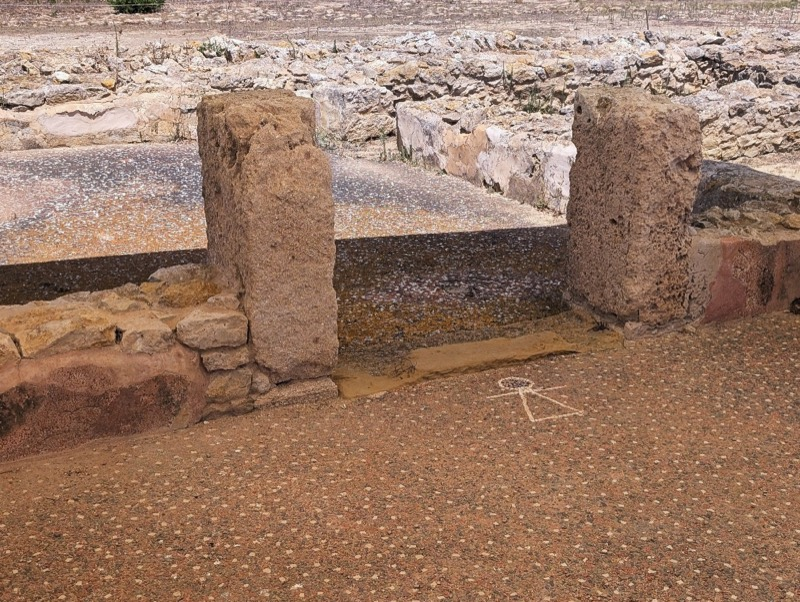
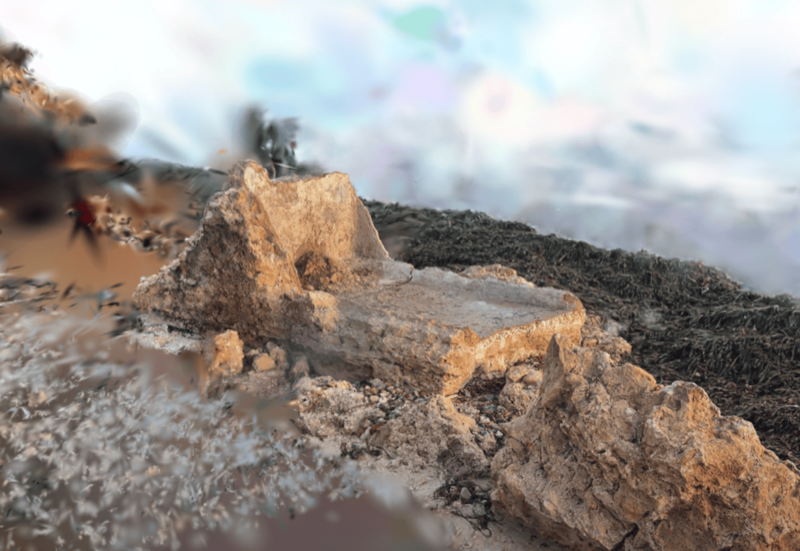
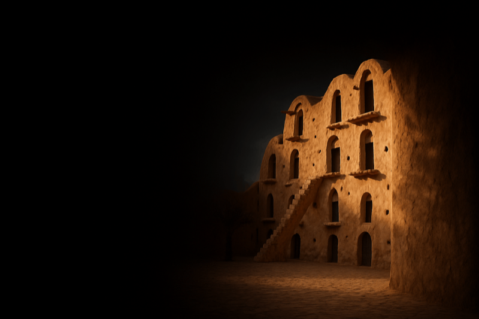
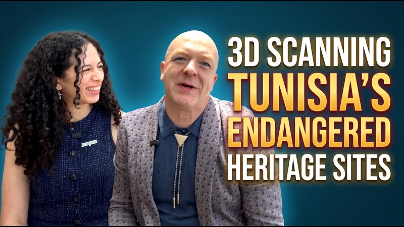
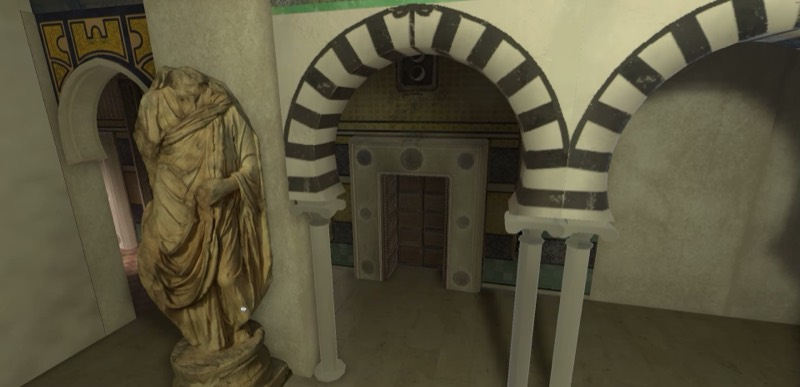

كتبها متطوّعونا: ما مسحوه، وما عرفوه عنه.

أرخى حمار بنّي أشعث جفنيه بينما كان تاجر يملأ عربته الخشبية بصناديق مكدّسة من الذرة والبطيخ. رأينا حميرًا أخرى مثله ونحن نشقّ طريقنا ببطء وسط زحمة يوم الجمعة الفوضوية، متّجهين نحو طرف…

بقلم: مارغريتا جونسون بدأت السنة الجديدة بعاصفة هاري التي اجتاحت الساحل المتوسطي التونسي، فأعادت تشكيل الشاطئ وحرّكت طبقات من الرمل ظلّت ساكنة قرونًا. ويلاحظ سكان المنطقة…

بقلم: مارغريتا جونسون يغمر الضوء الساطع هضبة تل بيرصا في قرطاج، وتهزّ الريح ما تبقّى من شظايا مدينة قديمة كانت يومًا منافسة لروما نفسها. وترتفع أعمدة كورنثية…

هذا أوّل مقال إخباري لـ Tanit XR، ويبدو من المناسب أن نبدأ بحكاية. النشأة بين الأطلال نشأت في تونس محاطة بالتاريخ. كان المرور بجانب أطلال قرطاج أمرًا عاديًا، بل شبه عابر. و…
ما نقوم به وأين سنكون.

كانت إيناس سعيد ضيفة Spatial Creator Spotlight، البرنامج الذي تقدمه Awesome Future. عُرضت الحلقة يوم 24 سبتمبر وهي متاحة على YouTube في أي وقت.…

شارك Tanit XR في يوم الهاكاثون CityCamp Gainesville يوم الأحد 20 سبتمبر 2026، في قاعة رايتز يونيون بجامعة فلوريدا، وهو يوم هاكاثون رسمي من MLH استضافته Florida المجتمع Innovation. دعا تحدّينا إلى بناء…